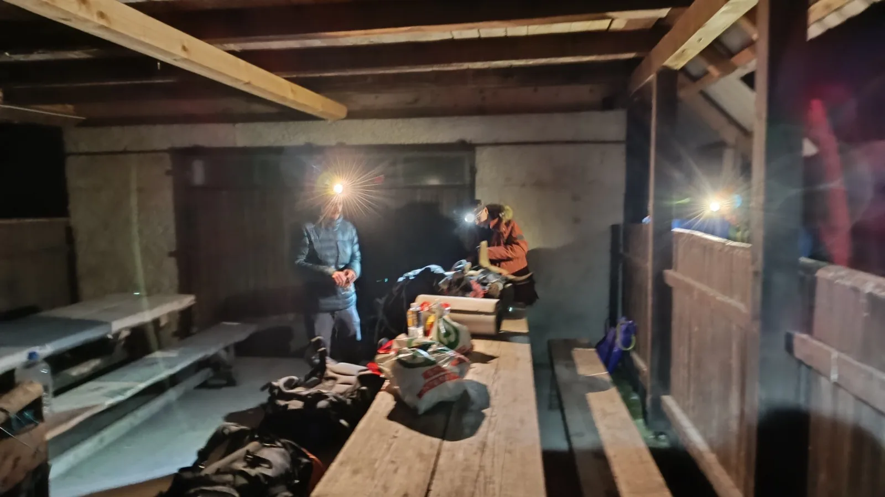

Bocnuli smo Bocinu!
Proteklog vikenda, kao dio priprema za nadolazeću 55. Zagrebačku speleološku školu, SOV je krenuo obići Vražju i Bocinu jamu, blizu Ogulina.

Datum: 21.-22. 02. 2025.
Napisao i fotkao: Edo Vričić / Kapetan Puž
Ekipa (SOV): Ana Ercegovac, Mateja Dimitrijević, Teo Barić., Edo Vričić
Proteklog vikenda, kao dio priprema za nadolazeću 55. Zagrebačku speleološku školu, SOV je krenuo obići Vražju i Bocinu jamu, blizu Ogulina. Od originalno planiranih 9 članova na izlet je krenulo nas 4 (Ana E., Mateja D., Teo B., Edo V.) pa smo radi nedostatka u brojevima i iskustva s lokacijom (Teo je jedini bio i to u ulozi školarca), odlučili da ćemo fokusirati snage na samo jedan od ta 2 objekta…i tako smo ‘bocnuli’ Bocinu!😊
U petak 21. 02. '25 navečer našli smo se u Velebitu, skupili svu potrebnu opremu (ili smo bar tako mislili), sjeli u ‘Miška’ (neslužbeni i još neodobreni naziv za ‘novi’ SOV kombi, kojem se opiru mnogi, ali autor vjeruje da boljeg imena nema!) i krenuli put Ogulina. Uz naravno još pokoju stanku na putu, jer Teo je zaboravio novčanik, a trebalo je otići i u opskrbu pa smo iz Zagreba izašli tek oko 21 sat. Ništa zato, čekao nas je zimski krajolik okolice Ogulina, a svi znamo koliko je to lijepo i mistično mjesto…pa nisu džabe vještice svoj dom našle na obližnjem Kleku😊 ?!
Kako je plan izleta pao u zadnji čas, nismo stigli uhvatiti ključ od lokalne lovačke kuće pa smo uz najavu domaćinima odlučili prespavati pod nadstrešnicom. Kroz glavu se provlačila misao da će biti mrzlo, no na kraju smo se super snašli - po dolasku smo spojili klupe i od njih napravili veliki ležaj, kako bi se odmakli od hladnoće poda, a sa dvije cerade zatvorili smo bar dio ‘strana’ i tako stvorili koliko-toliko ugodan prostor za provesti noć na polu-otvorenom. Naravno, palo je i koje pivce, a prepričavale su se zgode i nezgode sa lokacije, drugih škola, izleta i sl. Sve po običaju… 😊 Noć je prošla dobro jer svi smo imali i dobre vreće, a jutro nas je dočekalo relativno toplo, da možemo na miru obaviti doručak, kaficu/čaj, WC, i to bez da se srmznemo. Hvala Priroda! Nakon doručka smo spremili opremu, presvukli se i krenuli put Bocine. Pritom smo ustanovili da smo donijeli sveuupno 4 transportke opreme (planirano za 2 jame), sa čak 2 bušilice, ali da nemamo niti jednog jedinog borera?! Naš mladi ‘oružarski šegrt’ Teo naučio je lekciju – na popis treba staviti baš svaki detalj!
Ana (prvi put na lokaciji) je vodila prvi dio puta, prateći teren i poziciju jame na Oruxu – još jedna dobra vježba prije škole! Uz malo vrludanja, došli smo na ulaz i dogovorili ‘strategiju’ – Teo će postaviti školsku liniju i time vježbati postavljanje, a instruktorsku liniju će postaviti Mateja D. iz ASAK-a, koji je nedavno postao i član SOV-a (sad je naš!). Ana i ja smo išli za njima, a zahvaljujući relativnoj blizini sidrišta i jednostavnosti objekta, svi zajedno smo komunicirali o raznim detaljima jame, tijekom samog postavljanja. Po meni, idealan način da svi zajedno učimo na licu mjesta! S obzirom na vodu u završnom ‘bunaru’ jame, Mateja i Teo su podosta brzo postavili jamu do police gdje inače stajemo sa školarcima pa smo se svo četvero uskoro našli na njoj. Tu je pala kratka pauza i mini-gablec te rezimiranje viđenog u vertikali. Imali smo nekih primjedbi na protekle postavljače, posebice jer u nedostatku borera nismo mogli ništa učiniti po tom pitanju, ali sve u svemu bilo je zabavno i poučno, posnimili smo puno detalja u jami, a i svi se složili da je Bocina baš onako, che’che’… 😊 Iako relativno plitka (-63m), bunarskog je tipa pa je i dosta pregledna te daje lijepi pogled u dubinu kada su svjetla ispod tebe. Također, uz glavnu vertikalu, postoji i paralelna, koja se spaja na spomenutu policu i raspiruje ideje o novim, dodatnim načinima postavljanja jame. Sve u svemu, pravi mali bombončić za jedan kraći vikend izlet!
U popodnevnim satima izašli smo iz jame, skupili stvari i zatim ‘uboli’ najbolji i najkraći put do lovačke kuće te snimili track, koji će poslužiti za školicu. Na kući smo se presvukli i taman krenuli nešto prigrist, kad nam se pridružio i naš Davorin T. koji živi u blizini, s kojim smo se kratko podružili uz mezu i pivce.
Prema Zagrebu smo krenuli oko 19.30, taman da neki od nas odmore kao ljudi, a drugi pak odu na neku pankeriju u Boogaloo…svak’ na svoj način slavi dobar izlet 😊 !